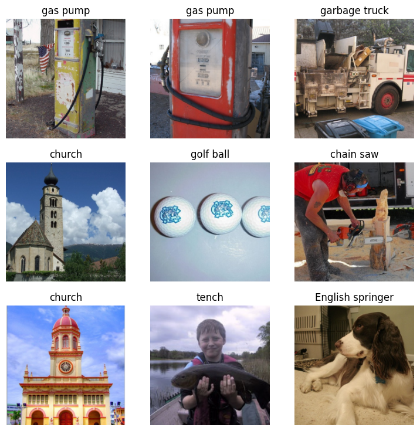
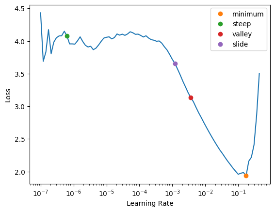
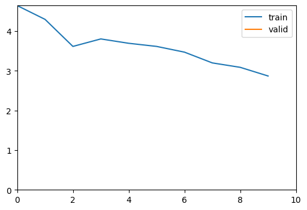
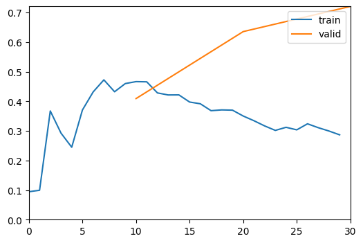
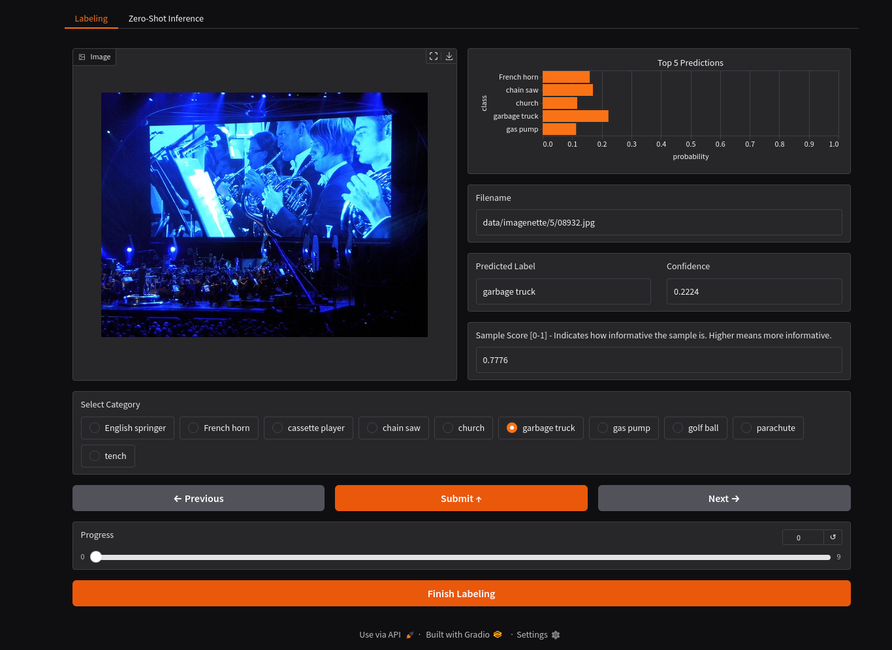

Quickstart
Introduction¶
This notebook will guide you through the basic steps to get started with Active Vision.
By the end of this notebook, you will be able to:
- Understand the basic workflow of active learning
- Understand the basic components of Active Vision
- Understand how to use Active Vision to train a model
- Understand how to use Active Vision to iteratively improve your dataset
Before we start, we need to prepare 3 sets of data:
- Initial samples: A dataset of labeled images to train an initial model. If you don't have any labeled data, you can label some images yourself.
- Unlabeled samples: A dataset of unlabeled images. We will continuously sample from this set using active learning strategies.
- Evaluation samples: A dataset of labeled images. We will use this set to evaluate the performance of the model. This is the test set, DO NOT use it for active learning. Split this out in the beginning.
We will use the Imagenette dataset as a working example in this notebook.
Load the dataset¶
active-vision currently supports datasets in a pandas dataframe format. The dataframe should have at least 2 columns: filepath and label.
import pandas as pd
initial_samples = pd.read_parquet("imagenette/initial_samples.parquet")
initial_samples.head()
| filepath | label | |
|---|---|---|
| 0 | data/imagenette/2/00710.jpg | cassette player |
| 1 | data/imagenette/2/00063.jpg | cassette player |
| 2 | data/imagenette/2/00506.jpg | cassette player |
| 3 | data/imagenette/2/00575.jpg | cassette player |
| 4 | data/imagenette/2/00136.jpg | cassette player |
Let's check the distribution of the labels.
initial_samples["label"].value_counts()
label
cassette player 10
tench 10
chain saw 10
church 10
parachute 10
gas pump 10
English springer 10
golf ball 10
garbage truck 10
French horn 10
Name: count, dtype: int64
Create an ActiveLearner¶
Now that we have an initial dataset, we can load it into an ActiveLearner object with a model.
Any fastai and timm models are supported. For simplicity, we will use a resnet18 model.
from active_vision import ActiveLearner
from fastai.vision.models.all import resnet18
al = ActiveLearner(resnet18)
2025-01-25 00:01:47.070 | INFO | active_vision.core:load_model:41 - Loading fastai model resnet18
We can load the initial samples into the ActiveLearner object.
al.load_dataset(initial_samples,
filepath_col="filepath",
label_col="label",
batch_size=8)
2025-01-25 00:01:47.075 | INFO | active_vision.core:load_dataset:59 - Loading dataset from filepath and label
2025-01-25 00:01:47.075 | INFO | active_vision.core:load_dataset:61 - Creating dataloaders
2025-01-25 00:01:47.321 | INFO | active_vision.core:load_dataset:83 - Creating learner
2025-01-25 00:01:47.473 | INFO | active_vision.core:load_dataset:92 - Done. Ready to train.
al.show_batch()

You can inspect the train and validation sets too.
al.train_set
| filepath | label | |
|---|---|---|
| 51 | data/imagenette/7/05378.jpg | gas pump |
| 83 | data/imagenette/6/07797.jpg | garbage truck |
| 97 | data/imagenette/5/08999.jpg | French horn |
| 75 | data/imagenette/8/06618.jpg | golf ball |
| 9 | data/imagenette/2/00420.jpg | cassette player |
| ... | ... | ... |
| 28 | data/imagenette/3/02542.jpg | chain saw |
| 5 | data/imagenette/2/00176.jpg | cassette player |
| 29 | data/imagenette/3/02582.jpg | chain saw |
| 60 | data/imagenette/1/06189.jpg | English springer |
| 32 | data/imagenette/4/02882.jpg | church |
80 rows × 2 columns
al.valid_set
| filepath | label | |
|---|---|---|
| 4 | data/imagenette/2/00136.jpg | cassette player |
| 64 | data/imagenette/1/06574.jpg | English springer |
| 40 | data/imagenette/9/04652.jpg | parachute |
| 54 | data/imagenette/7/05488.jpg | gas pump |
| 20 | data/imagenette/3/02629.jpg | chain saw |
| 31 | data/imagenette/4/03479.jpg | church |
| 82 | data/imagenette/6/08366.jpg | garbage truck |
| 57 | data/imagenette/7/05299.jpg | gas pump |
| 33 | data/imagenette/4/03555.jpg | church |
| 37 | data/imagenette/4/02843.jpg | church |
| 27 | data/imagenette/3/02785.jpg | chain saw |
| 26 | data/imagenette/3/02119.jpg | chain saw |
| 94 | data/imagenette/5/09397.jpg | French horn |
| 41 | data/imagenette/9/04180.jpg | parachute |
| 66 | data/imagenette/1/06196.jpg | English springer |
| 80 | data/imagenette/6/07907.jpg | garbage truck |
| 10 | data/imagenette/0/01629.jpg | tench |
| 1 | data/imagenette/2/00063.jpg | cassette player |
| 78 | data/imagenette/8/07354.jpg | golf ball |
| 72 | data/imagenette/8/06937.jpg | golf ball |
Train¶
Now that we have the initial dataset, we can train the model.
But first, let's check the optimal learning rate for the model.
al.lr_find()
2025-01-25 00:01:48.042 | INFO | active_vision.core:lr_find:115 - Finding optimal learning rate
2025-01-25 00:01:54.456 | INFO | active_vision.core:lr_find:117 - Optimal learning rate: 0.00363078061491251

Not let's use the optimal learning rate to train the model end-to-end for 3 epochs and 1 epoch of head tuning.
al.train(epochs=3, lr=5e-3, head_tuning_epochs=1)
2025-01-25 00:01:54.717 | INFO | active_vision.core:train:128 - Training head for 1 epochs
2025-01-25 00:01:54.718 | INFO | active_vision.core:train:129 - Training model end-to-end for 3 epochs
2025-01-25 00:01:54.718 | INFO | active_vision.core:train:130 - Learning rate: 0.005 with one-cycle learning rate scheduler
| epoch | train_loss | valid_loss | accuracy | time |
|---|---|---|---|---|
| 0 | 2.871501 | 0.771290 | 0.750000 | 00:01 |

| epoch | train_loss | valid_loss | accuracy | time |
|---|---|---|---|---|
| 0 | 0.460057 | 0.409270 | 0.850000 | 00:01 |
| 1 | 0.370149 | 0.635701 | 0.800000 | 00:01 |
| 2 | 0.286742 | 0.720829 | 0.800000 | 00:01 |

Evaluate¶
Now that we have a trained model, we can evaluate it on the evaluation set.
evaluation_df = pd.read_parquet("imagenette/evaluation_samples.parquet")
evaluation_df
| filepath | label | |
|---|---|---|
| 0 | data/imagenette/2/00000.jpg | cassette player |
| 1 | data/imagenette/2/00001.jpg | cassette player |
| 2 | data/imagenette/2/00002.jpg | cassette player |
| 3 | data/imagenette/2/00003.jpg | cassette player |
| 4 | data/imagenette/2/00004.jpg | cassette player |
| ... | ... | ... |
| 3920 | data/imagenette/5/03920.jpg | French horn |
| 3921 | data/imagenette/5/03921.jpg | French horn |
| 3922 | data/imagenette/5/03922.jpg | French horn |
| 3923 | data/imagenette/5/03923.jpg | French horn |
| 3924 | data/imagenette/5/03924.jpg | French horn |
3925 rows × 2 columns
al.evaluate(evaluation_df, filepath_col="filepath", label_col="label")
2025-01-25 00:02:04.166 | INFO | active_vision.core:evaluate:183 - Accuracy: 89.22%
0.8922292993630573
That is a good start. 89% accuracy is not bad for a first try with only 80 labeled samples. Let's see if we can improve it.
Predict¶
Using the model, we can predict the labels of the unlabeled samples and get the most impactful samples to label.
df = pd.read_parquet("imagenette/unlabeled_samples.parquet")
filepaths = df["filepath"].tolist()
len(filepaths)
9369
pred_df = al.predict(filepaths, batch_size=128)
pred_df
2025-01-25 00:12:36.925 | INFO | active_vision.core:predict:139 - Running inference on 9369 samples
| filepath | pred_label | pred_conf | probs | logits | |
|---|---|---|---|---|---|
| 0 | data/imagenette/2/00000.jpg | cassette player | 0.999940 | [3.8786602090112865e-06, 2.0944246443832526e-06, 0.9999401569366455, 5.659975158778252e-06, 1.2189193654421615e-08, 3.137968860755791e-06, 5.577669526246609e-06, 1.6730854213165003e-06, 3.2309548259945586e-05, 5.561352736549452e-06] | [-1.6552734375, -2.271484375, 10.8046875, -1.27734375, -7.41796875, -1.8671875, -1.2919921875, -2.49609375, 0.464599609375, -1.294921875] |
| 1 | data/imagenette/2/00001.jpg | cassette player | 0.996448 | [4.007924144389108e-05, 0.0001770971284713596, 0.9964480400085449, 4.143233672948554e-05, 6.213659071363509e-05, 0.00016007207159418613, 0.0026889692526310682, 3.355292938067578e-05, 0.00015110982349142432, 0.00019756612891796976] | [-2.38671875, -0.90087890625, 7.734375, -2.353515625, -1.9482421875, -1.001953125, 1.8193359375, -2.564453125, -1.0595703125, -0.79150390625] |
| 2 | data/imagenette/2/00002.jpg | cassette player | 0.999960 | [4.068855105288094e-06, 2.1588432446151273e-06, 0.9999604225158691, 9.62526272019204e-08, 2.7002775823348202e-05, 1.9579856598284096e-06, 3.7465749755938305e-06, 2.970585910588852e-07, 2.372987779608593e-07, 1.4878810361551587e-07] | [-0.638671875, -1.2724609375, 11.7734375, -4.3828125, 1.25390625, -1.3701171875, -0.72119140625, -3.255859375, -3.48046875, -3.947265625] |
| 3 | data/imagenette/2/00004.jpg | cassette player | 0.979522 | [0.007508011534810066, 3.5657776606967673e-06, 0.9795216917991638, 0.0006528471712954342, 9.259342186851427e-05, 0.0010664233705028892, 0.010988288559019566, 6.754462083335966e-05, 9.027201303979382e-05, 8.72256623551948e-06] | [2.6328125, -5.01953125, 7.50390625, 0.1904296875, -1.7626953125, 0.68115234375, 3.013671875, -2.078125, -1.7880859375, -4.125] |
| 4 | data/imagenette/2/00005.jpg | cassette player | 0.797918 | [0.011532734148204327, 0.003183037508279085, 0.7979180216789246, 0.009069844149053097, 0.0023915632627904415, 0.00016750465147197247, 0.1725618839263916, 0.0006079384475015104, 0.0024530640803277493, 0.00011445157724665478] | [0.87646484375, -0.410888671875, 5.11328125, 0.63623046875, -0.69677734375, -3.35546875, 3.58203125, -2.06640625, -0.67138671875, -3.736328125] |
| ... | ... | ... | ... | ... | ... |
| 9364 | data/imagenette/5/09464.jpg | French horn | 0.987643 | [0.00029267228092066944, 0.9876433610916138, 0.001452236552722752, 4.644334330805577e-05, 0.005708757322281599, 0.002765971701592207, 0.0017633169190958142, 5.4510288464371115e-05, 6.473256507888436e-05, 0.0002079414698528126] | [-1.2373046875, 6.88671875, 0.364501953125, -3.078125, 1.7333984375, 1.0087890625, 0.55859375, -2.91796875, -2.74609375, -1.5791015625] |
| 9365 | data/imagenette/5/09465.jpg | French horn | 0.999925 | [5.922832770011155e-06, 0.9999253749847412, 1.7656429918133654e-05, 6.576460975793452e-08, 3.2158670819626423e-06, 2.4867827619345917e-07, 4.3148804252268746e-05, 2.667349690455012e-06, 2.9996323291925364e-07, 1.3404093124336214e-06] | [0.58837890625, 12.625, 1.6806640625, -3.912109375, -0.0223388671875, -2.58203125, 2.57421875, -0.2093505859375, -2.39453125, -0.8974609375] |
| 9366 | data/imagenette/5/09466.jpg | French horn | 0.999991 | [1.95907591660216e-06, 0.9999905824661255, 1.729398633187884e-07, 3.432096562505649e-08, 1.907207774820563e-06, 2.8670799565588823e-06, 3.208930934306409e-07, 1.9355577478563646e-06, 6.142320785329503e-08, 2.1396972726961394e-07] | [-0.01021575927734375, 13.1328125, -2.4375, -4.0546875, -0.03704833984375, 0.37060546875, -1.8193359375, -0.0222930908203125, -3.47265625, -2.224609375] |
| 9367 | data/imagenette/5/09467.jpg | French horn | 0.997561 | [8.926929149311036e-05, 0.9975610971450806, 0.0010718390112742782, 1.3839429811923765e-05, 0.0008035547216422856, 1.7392470908816904e-05, 0.00041161972330883145, 1.3975242836750112e-05, 4.9830268835648894e-06, 1.2454139323381241e-05] | [-0.2354736328125, 9.0859375, 2.25, -2.099609375, 1.9619140625, -1.87109375, 1.29296875, -2.08984375, -3.12109375, -2.205078125] |
| 9368 | data/imagenette/5/09468.jpg | French horn | 0.998887 | [2.4250099158962257e-05, 0.9988873600959778, 0.00023947758018039167, 3.870794898830354e-06, 0.000558981322683394, 0.00010968768037855625, 0.00011828438437078148, 2.9080310923745856e-05, 3.0382213935808977e-06, 2.5915131118381396e-05] | [-1.6103515625, 9.015625, 0.6796875, -3.4453125, 1.52734375, -0.10113525390625, -0.0256805419921875, -1.4287109375, -3.6875, -1.5439453125] |
9369 rows × 5 columns
Sample¶
With the predicted labels, we can sample the most impactful samples to label using active learning strategies.
For this example, we will use the sample_uncertain strategy to sample the most uncertain samples. This will pull out samples that the model is most unsure about.
uncertain_df = al.sample_uncertain(pred_df, num_samples=10)
uncertain_df
2025-01-25 00:13:46.813 | INFO | active_vision.core:sample_uncertain:203 - Using least confidence strategy to get top 10 samples
| filepath | pred_label | pred_conf | score | probs | logits | |
|---|---|---|---|---|---|---|
| 8838 | data/imagenette/5/08932.jpg | garbage truck | 0.2224 | 0.7776 | [0.003269913839176297, 0.15925484895706177, 0.0705740824341774, 0.17002329230308533, 0.1168551817536354, 0.22240279614925385, 0.11320464313030243, 0.10122854262590408, 0.02307766117155552, 0.02010904625058174] | [-3.1171875, 0.7685546875, -0.0452880859375, 0.833984375, 0.458984375, 1.1025390625, 0.42724609375, 0.3154296875, -1.1630859375, -1.30078125] |
| 6444 | data/imagenette/1/06511.jpg | French horn | 0.2364 | 0.7636 | [0.13806648552417755, 0.23635455965995789, 0.06352084875106812, 0.044692497700452805, 0.132066011428833, 0.010354314930737019, 0.0016738689737394452, 0.0987921953201294, 0.06548923254013062, 0.2089899480342865] | [0.48095703125, 1.0185546875, -0.29541015625, -0.64697265625, 0.4365234375, -2.109375, -3.931640625, 0.146240234375, -0.264892578125, 0.8955078125] |
| 2345 | data/imagenette/3/02368.jpg | golf ball | 0.2417 | 0.7583 | [0.00036688963882625103, 0.07101781666278839, 0.001960279420018196, 0.1306217461824417, 0.03515636920928955, 0.1468619853258133, 0.2196064293384552, 0.24166202545166016, 0.02237950637936592, 0.13036687672138214] | [-3.73046875, 1.53515625, -2.0546875, 2.14453125, 0.83203125, 2.26171875, 2.6640625, 2.759765625, 0.38037109375, 2.142578125] |
| 5188 | data/imagenette/7/05243.jpg | golf ball | 0.2456 | 0.7544 | [0.0009938922012224793, 0.011564904823899269, 0.010680132545530796, 0.2197105586528778, 0.21757540106773376, 0.06227555125951767, 0.2163042575120926, 0.24558402597904205, 0.005686040502041578, 0.009625168517231941] | [-3.16796875, -0.7138671875, -0.79345703125, 2.23046875, 2.220703125, 0.9697265625, 2.21484375, 2.341796875, -1.423828125, -0.8974609375] |
| 5648 | data/imagenette/1/05709.jpg | tench | 0.2512 | 0.7488 | [0.17077375948429108, 0.13443513214588165, 0.004920767620205879, 0.0035235893446952105, 0.002528051845729351, 0.06248761713504791, 0.020686879754066467, 0.16247674822807312, 0.18700958788394928, 0.25115787982940674] | [1.560546875, 1.3212890625, -1.986328125, -2.3203125, -2.65234375, 0.55517578125, -0.55029296875, 1.5107421875, 1.6513671875, 1.9462890625] |
| 2156 | data/imagenette/3/02178.jpg | church | 0.2603 | 0.7397 | [0.0009152884013019502, 0.030103696510195732, 0.0005044839926995337, 0.21622677147388458, 0.2603103518486023, 0.14235998690128326, 0.16353562474250793, 0.09957758337259293, 0.025536205619573593, 0.060930028557777405] | [-2.544921875, 0.9482421875, -3.140625, 2.919921875, 3.10546875, 2.501953125, 2.640625, 2.14453125, 0.78369140625, 1.6533203125] |
| 1689 | data/imagenette/0/01707.jpg | golf ball | 0.2612 | 0.7388 | [0.028023481369018555, 0.1736881583929062, 0.07131629437208176, 0.05589486286044121, 0.07441110908985138, 0.13239331543445587, 0.1123058944940567, 0.26124656200408936, 0.002871178090572357, 0.08784912526607513] | [-0.4462890625, 1.3779296875, 0.48779296875, 0.244140625, 0.5302734375, 1.1064453125, 0.94189453125, 1.7861328125, -2.724609375, 0.6962890625] |
| 2408 | data/imagenette/3/02432.jpg | tench | 0.2619 | 0.7381 | [0.01239323616027832, 0.05418980121612549, 0.02292860671877861, 0.08176667243242264, 0.16452926397323608, 0.18652713298797607, 0.05926935002207756, 0.11360494792461395, 0.04289907217025757, 0.2618919909000397] | [-1.8330078125, -0.357666015625, -1.2177734375, 0.0537109375, 0.7529296875, 0.87841796875, -0.26806640625, 0.382568359375, -0.59130859375, 1.2177734375] |
| 8042 | data/imagenette/6/08129.jpg | parachute | 0.2659 | 0.7341 | [0.00014282824122346938, 0.0025144435930997133, 0.0008817911730147898, 0.16065803170204163, 0.10639607906341553, 0.252257376909256, 0.0058434028178453445, 0.08482634276151657, 0.265917032957077, 0.12056255340576172] | [-4.359375, -1.4912109375, -2.5390625, 2.666015625, 2.25390625, 3.1171875, -0.64794921875, 2.02734375, 3.169921875, 2.37890625] |
| 3880 | data/imagenette/9/03921.jpg | parachute | 0.2673 | 0.7327 | [0.07887357473373413, 0.1806977540254593, 0.038154736161231995, 0.015850991010665894, 0.001349001657217741, 0.23682786524295807, 0.005408851429820061, 0.1205471009016037, 0.2673148810863495, 0.05497531592845917] | [0.1700439453125, 0.9990234375, -0.55615234375, -1.4345703125, -3.8984375, 1.26953125, -2.509765625, 0.59423828125, 1.390625, -0.19091796875] |
Label¶
Let's label the 10 most uncertain samples.
al.label(uncertain_df, output_filename="imagenette/uncertain")

The Gradio interface will open up and you can label the samples. You could also see the confidence of the model for each sample to debug the model.
labeled_df = pd.read_parquet("imagenette/uncertain.parquet")
labeled_df
| filepath | label | |
|---|---|---|
| 0 | data/imagenette/5/08932.jpg | French horn |
| 1 | data/imagenette/1/06511.jpg | English springer |
| 2 | data/imagenette/3/02368.jpg | chain saw |
| 3 | data/imagenette/7/05243.jpg | gas pump |
| 4 | data/imagenette/1/05709.jpg | English springer |
| 5 | data/imagenette/3/02178.jpg | chain saw |
| 6 | data/imagenette/0/01707.jpg | tench |
| 7 | data/imagenette/3/02432.jpg | chain saw |
| 8 | data/imagenette/6/08129.jpg | garbage truck |
| 10 | data/imagenette/9/03921.jpg | parachute |
Add to train set¶
Now that we have labeled the samples, we can add them to the train set.
al.add_to_train_set(labeled_df, output_filename="imagenette/active_labeled")
2025-01-25 00:20:54.404 | INFO | active_vision.core:add_to_train_set:769 - Adding 10 samples to training set
2025-01-25 00:20:54.407 | INFO | active_vision.core:add_to_train_set:778 - Saved training set to imagenette/active_labeled.parquet
Repeat¶
We can repeat the process of predicting, sampling, labeling, and adding to the train set until we have a good model.